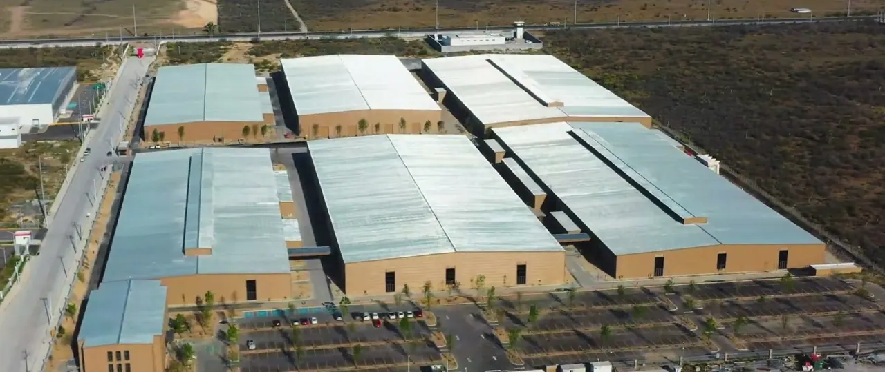
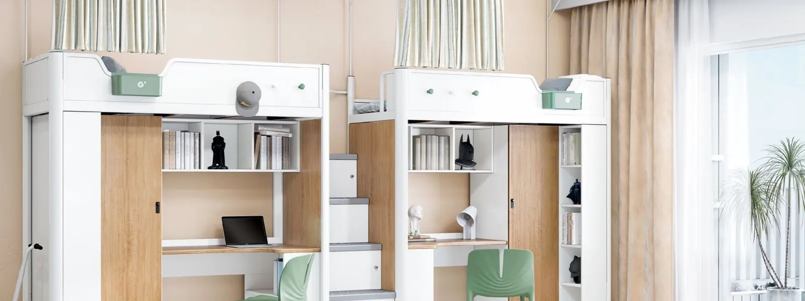
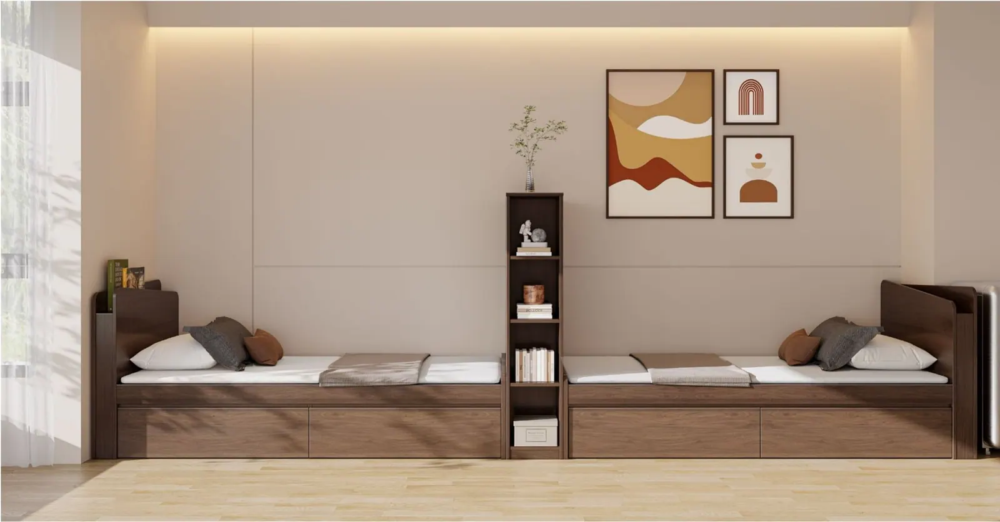
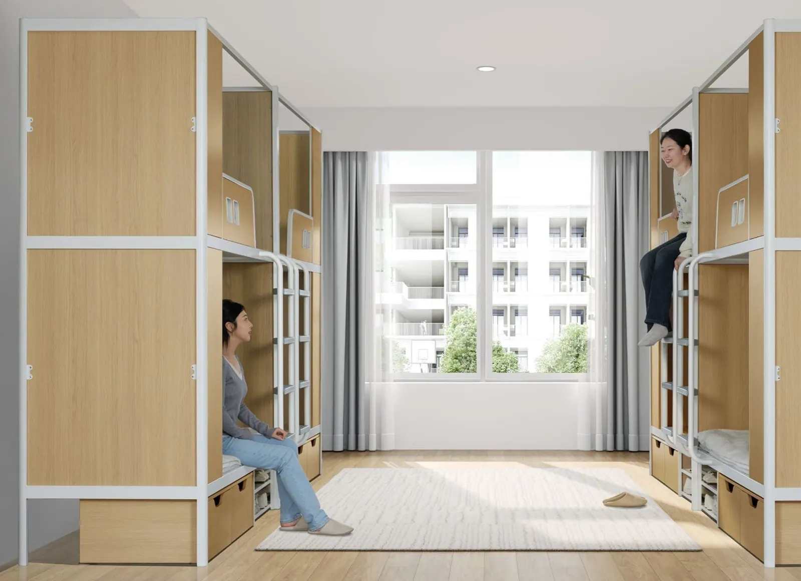
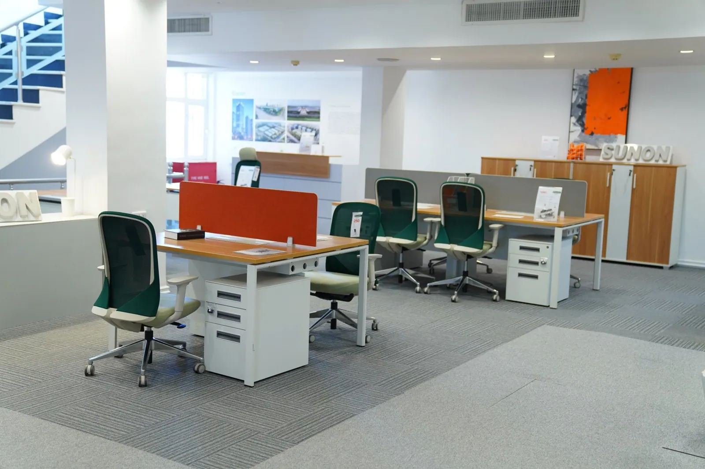

Sunon
Mobiliario corporativo y residencial

Mobiliario corporativo con planta propia en Nuevo León
Sunon fabrica mobiliario de oficina desde 1991 en Hangzhou, China, y cuenta con más de 50 centros de experiencia en el mundo. Su portafolio cubre sillería, escritorios de altura ajustable, estaciones de trabajo, mesas, almacenaje, cabinas acústicas y una línea para residencias estudiantiles y departamentos. Desde 2024 también produce en México, en su planta de Salinas Victoria, Nuevo León.
+130países donde vende sus productos
80,000 m²de planta en Nuevo León
1,938patentes registradas
~100clientes de la lista Fortune 500
Lo que la distingue
- Clientes globales: Google, Amazon, Alibaba, Coca-Cola, WeWork, Ford, PepsiCo y Heineken.
- Energía solar: unos 11.14 millones de kWh al año; evita unas 4,779 t de CO₂.
- Plantas en Xiaoshan, Haining, Qiantang y Hebei; la de Hebei mide 408,000 m².
- Premios de diseño iF, Red Dot, German Design Award y Good Design en sillas como H5.
- Centros de I+D en Hangzhou, Berlín y Los Ángeles; unas 10 series nuevas al año.
- Planta Sunon en Salinas Victoria, Nuevo León
- Taller de laminados
- Taller de asientos
- Empaque con sello Hecho en México
Video de Sunon: su planta y centro de experiencia en Nuevo León, sin narración (70 s).
Productos




- Silla H5. Silla de oficina premiada con plástico reciclado de redes de pesca; 76% menos emisiones de carbono, según Sunon
Videos oficiales de Sunon
Proyectos de referencia
- WeWork: más de 400,000 escritorios, sillas y pedestalesVarios países
- Husky OilCanadá
- Proyecto de transporte de Sharjah (entregado en 2012)Sharjah, Emiratos Árabes Unidos
- Oficinas globales de Monolithic Power SystemsVarios países